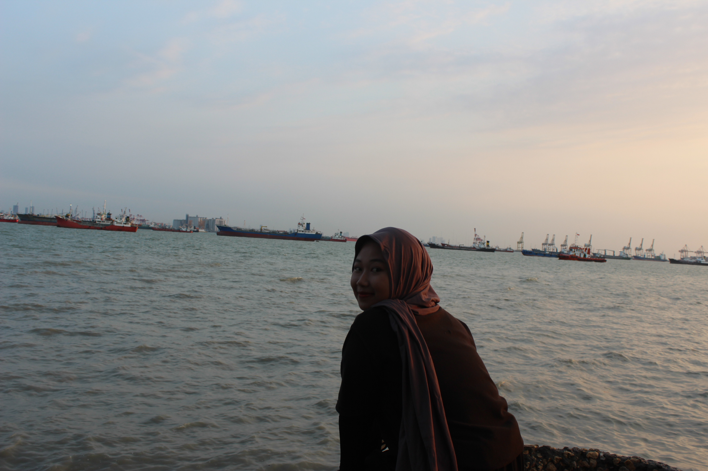
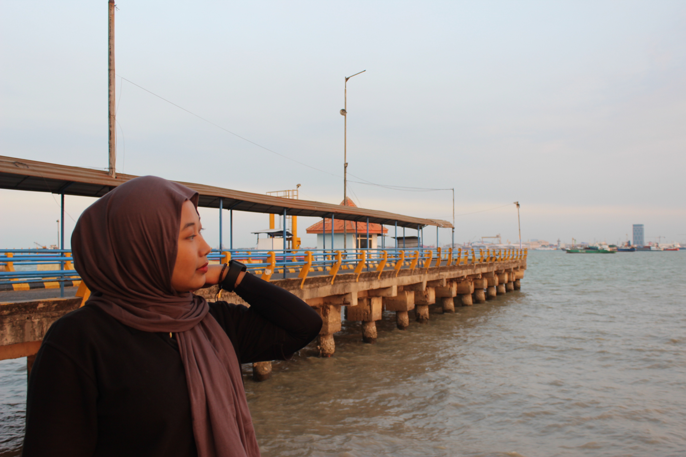
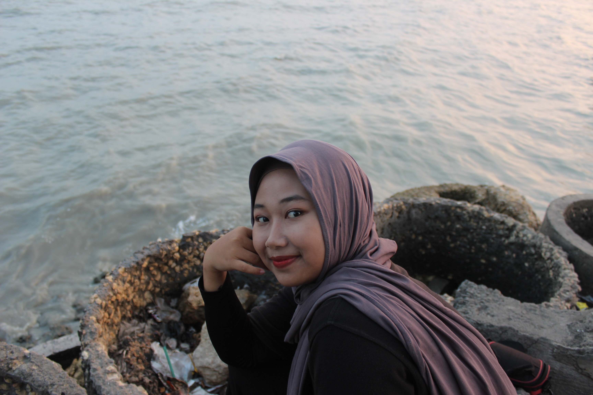

Email: vikadwi443@email.com
Telepon: 085812442423
TTL : Lamongan,26, Oktober, 2003
Kenalin nama saya Vika Dwi Nur Romadhoni, biasa dipanggil Vika. Asal saya dari Kabupaten Lamongan. Status saya sekarang adalah Mahasiswi di salah satu Universitas Negeri yang ada di Madura yaitu Universitas Trunojoyo Madura. Di Universitas tersebut saya masuk pada jurusan Pendidikan Informatika Fakultas Ilmu Pendidikan. Saya masuk pada angkatan 2021 dan sekarang saya menempuh semester 5 dan melakukan program MBKM dengan memilih program Studi Independen di Mitra kerja PT. Kinema Systerans Multimedia, mengambil kelas Web Development.
  